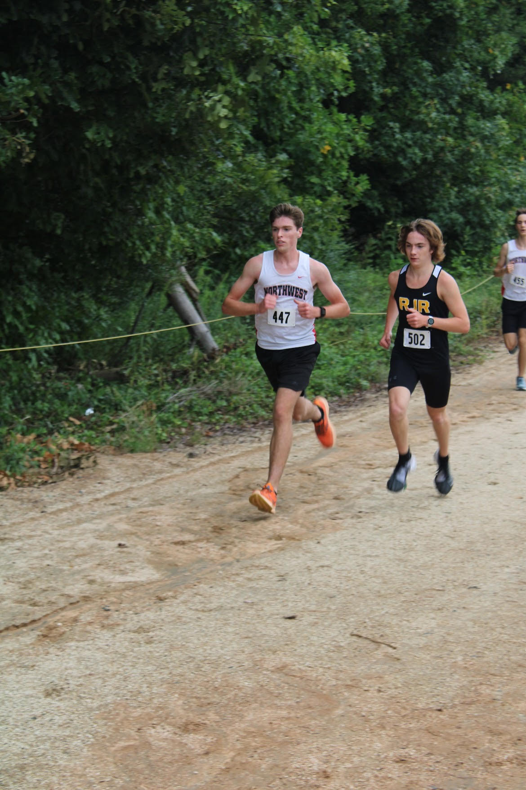

LEADERSHIP
Northwest Guilford High school Athletics — Senior Leader

August 2019-Present
I run year-round for the Northwest Guilford High school cross country and track teams. I set
the
standard for
younger runners by leading warmups, core workouts, and consistent effort at every practice and race.
Code Club — Co-Vice President
2020-Present
I teach programming concepts to new club members, lead my team in the “Ready! Set! App!”
Programming
competition, and compete in the American Computer Science League. I Helped lead a virtual summer camp
introducing middle and elementary schoolers to MIT Scratch and HTML in 2021.
Educate US— Co-President
August 2021-Present
I lead weekly tutoring sessions at local middle schools. I ensure all tutors have
transportation,
materials, and
are prepared to effectively tutor students in math, ELA, science, and social studies.
Student Council — Senior Representative
May 2022-Present
I am responsible for communicating with and advocating for the senior class at the Early
College
at Guilford. I utilize my reliability, dedication, and open mindedness to ensure consistent support for all
my
peers.